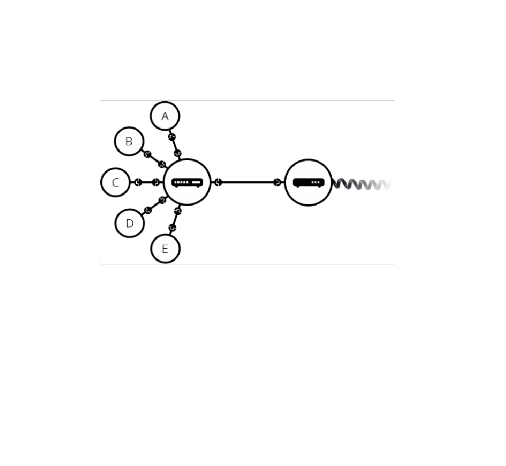
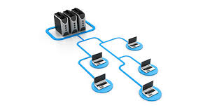
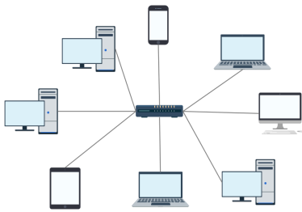
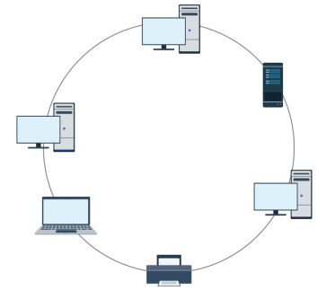
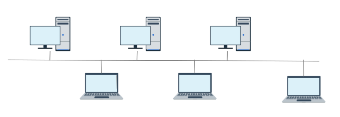
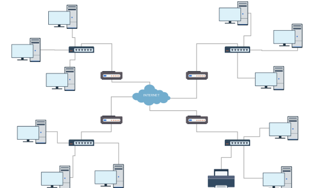

Introduction
In networking, a physical topology refers to the physical layout of devices and how they are connected within a network. It describes the arrangement and placement of nodes (such as computers, switches, and routers) and the cables that connect them.
Definition
Physical topology is the physical layout of a network, including the placement of devises and the type of cabling used to connect them .it is the actual arrangement of the network’s components, such as a computers, printers, and servers, As well as the cables and other devices that connect them.
Types of physical topology
1. Star topology
Star topology is a network topology in which all devices are connected to a central device, such as a hub, switch, or router. The central device acts as a mediator for all communication between devices on the network.
2. Ring topology
Ring topology is a network topology in which each device is connected to two other devices, forming a closed loop. Data travels around the loop, stopping at each device to see if it is the intended recipient. If it is not, the device passes the data on to the next device in the loop
3. Bus topology
Bus topology is a network topology in which all devices are connected to a single cable, called a backbone. Data travels along the backbone in both directions, and each device on the network receives all data that is transmitted.
4. Tree topology
Tree topology is a hierarchical network topology in which nodes are connected in a treelike structure, with one central node (root node) and all other nodes connected to the root node or to other nodes in the hierarchy.